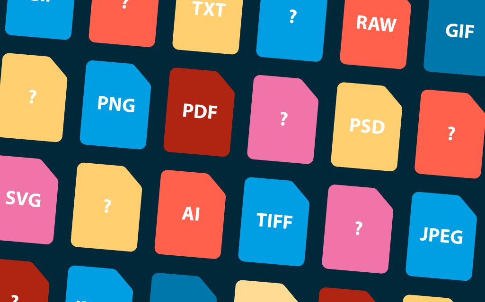

Bestandsformaten
Wat is dit?
Een bestandsformaat is een manier waarop gegevens worden opgeslagen.
Elk bestandsformaat heeft zijn manier van een bestand lezen of interpeteren.
Waar heb je dit voor nodig?
-Om data te kunnen lezen en schrijven.
- Om data te kunnen uitwisselen.
- Om data te kunnen bewerken.
- Om informatie te onderscheiden.
kkkkkkijk de foto hieronder om verschillende soorten bestandsformaten te bekijken:
